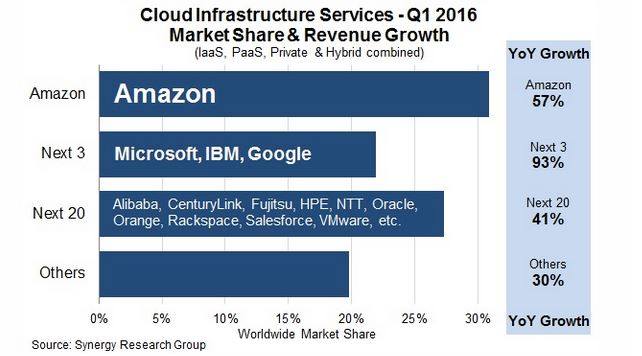

21st century is well-known for the digital age; needless to say that everything is based on information technology.
AWS has made History by running massive-scale technologies not only around the world with a technical presence in several geographical regions, availability zones, and edge-locations but also using "Products & Services" such as computing, networking, storage, and database.
I cannot talk about AWS without mentioning the following advantages of Cloud Computing:
- Gaining agility meaning to provision resources almost instantly;
- Avoiding guessing capacity meaning to scale up or down when needed;
- Avoiding physical infrastructure like physical data centers, racking, wiring just to name a few;
- Going global in minutes compared to traditional model that takes 3-6 months;
- Moving from capital expenses to flexible expenses means to facilitate innovation as many times as you want instead of spending money on purchasing hardware
AWS follows the "shared-security model" meaning AWS is responsible for the security of the cloud while customers are responsible for the security in the cloud.
There are four primary certifications that can be obtained; Developer, SysOps Administrator, DevOps Engineer and Solutions Architect. There are also two different levels of Solutions Architect certification. The first level is Associate, and the highest level is Professional.
What to expect from AWS CSA
As an AWS (CSA) Certified Solution Architect, I possess significant achievements around specific application projects as well as comprehensive know-how around how applications and services are built through the AWS platform.
Willing to spread best-practice knowledge between the solution architect teams
Understand well-defined purposes and technical standards
As an I.T. admin., I have 1-year of studying and practical experience.

"10 years ago, Amazon Web Services was launched with little fanfare as a side business for Amazon.com. Today, it’s a highly successful company in its own right, riding a remarkable $10 billion run rate," according to TechChrunch.com.
In fact, AWS has grown into the most successful cloud infrastructure company on the planet, garnering more than 30 percent of the market. More than its three closest rivals — Microsoft, IBM and Google — combined, according to data from Synergy Research.
Speaking recently at an event in Washington, DC, AWS CEO Andy Jassy, who has been there from the beginning, explained how these core systems developed out of need over a three-year period beginning in 2000, and, before they knew it, without any real planning, they had the makings of a business that would become AWS.
Besides "Going global in minutes," Elasticity is one of the major benefits of moving to the cloud:
- Auto Scaling can automatically be used to scale up (adding) or scale down (removing) instances in your envorinment.
- Elastic Load Balancer (ELB) is to distribute the load across EC2 instances in multiple availability zones.
- Dynamo DB is a fully managed service that is used to maintain user state information.
Technical Bird's-eye View
The operation team should have a dashoboard providing a bird's-eye view of the status of all the applications'health checks:
- Amazon CloudWatch Logs ← to monitor and store logs from EC2s, CloudTrail, and other sources.
- Amazon ElasticSearch ← to log analytics and application monitoring
- Personal Health Dashboard ← to provide alerts when AWS is experiencing events that may impact you.
- Service Health Dashboard ← to provide up-to-the-minute information on AWS service availability.
By creating your Virtual Private Cloud standing for VPC which means your own "logically isolated region, you have complete control over the networking."
- VPCs are region specific meaning for multiple regions, you need to create different VPCs.
- Subnets are Availability Zone specific meaning for multiple AZs, you need to create multiple subnets.
- New subnets should be created between CIDR block range of: /19 = 8,190 IP addresses and /28 = 16 IP addresses
- Route Table (or internal mapping traffic) is automatically set up when creating a VPC. Thus, each subnet should have its own route table.
- Internet Gateway (IG) allows your VPC to communicate with the Internet
- NAT Instances are not only located in Public Subnet but also act like a bridge to connect the Private Subnet to the Internet in order to download firmware updates and database patches.
- NAT Gateway is a managed service which provides better availability and bandwidth and performs the same functions as NAT instances.
- Egress-Only Internet Gateway allows VPC to communicate with the Internet for IPv6 traffic only.
- Elastic Network Interface (ENI) is a virtual network interface that you can attach to an instance. ENI's attributes are: MACaddresses, 1 IPv4, 1 or more IPv6, 1 or more security group, a source/destination/check flag and description.
- Elastic IP address (EIP) is not only a static IP address but also a public IPv4 address.
Public IP addresses are dynamic whereas Elastic IPs get allocated to your account, and stay the same.
- Security Group (SG) not only acts as a virtual firewall but also is instance specific meaning different SGs for different instances.
SGs are stateful means changes applied to incoming rule (allowed Port 80) automatically apply to outgoing rule (opened Port 80).
- Network Access Control List (NACL) acts as a firewall and is subnet specific.
NACLs are stateless means changes applied to incoming rule will not be applied to the outgoing rule. e.g. If you allow an incoming port 80, you would also need to apply the rule for outgoing traffic.
- VPC Peering allows 1 VPC to connect to another using IPv4 or IPv6 addresses. You can't peer VPCs across regions.
- VPC Endpoint allows you to connect to VPC and other services outside like S3 and Dynamo DB. No public IPv4 and Internet Gateway needed.
- VPC Flow Logs enables you to capture information about IP traffic going to and from network interfaces in your VPC.
- Default VPC is created in each region by default. with the following features: Dynamic Public & Private IPs, Public & Private DNS names...
Python has two primitive loop commands:
while (condition)
statement
If the condition becomes false, statement within the loop stops executing and control passes to the statement following the loop.
The condition test occurs before statement in the loop is executed. If the condition returns true, statement is executed and the condition is tested again. If the condition returns false, execution stops and control is passed to the statement following while.
With the while loop we can execute a set of statements as long as a condition is true.
Example:
The following while loop iterates as long as n is less than three:
var n = 0;
var x = 0;
while (n < 3) {
n++;
x += n;
}
With each iteration, the loop increments n and adds that value to x. Therefore, x and n take on the following values:
After the first pass: n = 1 and x = 1
After the second pass: n = 2 and x = 3
After the third pass: n = 3 and x = 6
After completing the third pass, the condition n < 3 is no longer true, so the loop terminates.
A for loop is used for iterating over a sequence (that is either a list, a tuple, a dictionary, a set, or a string).
Loop through a string.
The break statement
The continue statement
The range function
This is less like the for keyword in other programming language, and works more like an iterator method as found in other object-orientated programming languages.
for (condition)
statement
With the for loop we can execute a set of statements, once for each item in a list, tuple, set etc.
With the keyword for, we will have a loop through the letters in 'banana'. For example, for x in "banana":
print(x) .
The for loop does not require an indexing variable to set beforehand.